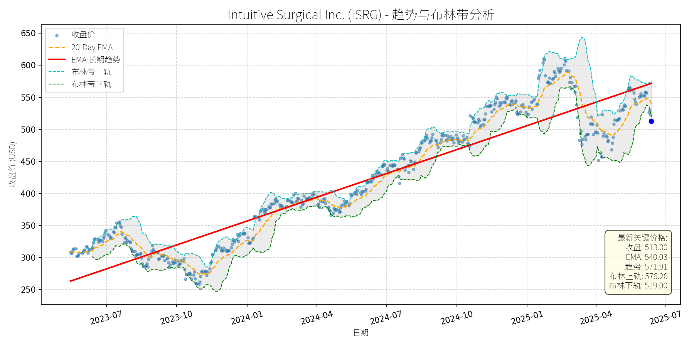

股票异动分析报告
报告生成日期: 2025-06-13
Intuitive Surgical Inc. (ISRG)
R²: 0.886
斜率: 0.41
布林带穿透: 1.17%

分析师模型总结
### 1. 核心业务与基本面评估
Intuitive Surgical (ISRG) 是**机器人辅助手术（RAS）市场的绝对领导者**，其核心产品为da Vinci surgical系统，用于泌尿外科、结直肠、心脏等微创外科手术。公司业务模式以“设备销售+ recurring revenue（服务、耗材及配件）”为主，其中84%的收入来自后者，具备强客户粘性（医院购买百万级别的da Vinci系统后，不会轻易切换至竞争对手，因培训成本高）。
**财务健康状况**：
- 负债权益比（Debt To Equity）仅0.13，处于极低水平，财务结构稳健，抗风险能力强；
- 2024年营收（$8.35B）及净利润（$2.34B）保持稳定增长（2025年一季度营收同比增长19%，EPS同比增长21%），盈利能力持续提升。
**估值水平**：
- 当前PE（78.44x）显著高于五年平均（56x），PS（23.95x）、PB（12.10x）亦处于历史较高区间，**估值偏高**；但结合其“市场领导者+高成长性+ recurring revenue模式”，高估值部分反映了市场对其长期增长的预期。
### 2. 技术面与消息面分析
**技术面信号**：
- 长期趋势：图表中红色“EMA长期趋势线”呈明确上升态势（2023年至今从约260美元升至当前571.91美元），显示公司股价长期处于上升通道；
- 当前偏离：最新收盘价（$513）较长期趋势线（$571.91）低约10%，且低于布林带下轨（$519），处于**超卖区间**，短期技术面存在反弹需求。
**回调原因分析**：
- 无明确重大利空驱动：近期新闻未提及公司基本面恶化（如产品召回、监管处罚或业绩暴跌）；
- 可能源于**技术性调整+市场情绪**：2025年以来大盘波动（如关税政策不确定性）导致高估值成长股回调，ISRG作为高PE品种（78x）受市场风险偏好下降影响，出现短期下跌；
- 关税影响已被消化：2025年5月新闻提到公司因部分组件（如欧洲产内镜、墨西哥产耗材）面临关税压力，预计毛利率略有收缩（从2024年69.1%降至2025年65%-66.5%），但管理层已明确将通过供应链调整（如转移生产）缓解，且该影响未改变公司长期增长逻辑（股价在 earnings 后曾反弹，说明市场已消化此利空）。
### 3. 综合前景展望与量化判断
**核心投资逻辑**：
ISRG是**基本面优秀（高成长、稳盈利、强护城河）的公司，当前回调源于技术性调整及市场情绪，而非基本面恶化**。其竞争优势（da Vinci系统的市场垄断地位、高切换成本、recurring revenue模式）及行业增长驱动（老龄化人口、微创手术需求提升、内镜设备市场CAGR 7.1%至2030年）均未改变，长期仍具备持续增长能力。
#### 短期展望（未来1-4周）
- **走势预测**：技术性反弹（超卖修复+布林带下轨支撑）；
- **短期目标价**：$545（对应20-Day EMA $540.03及布林中轨$547.6的中枢水平）；
- **涨跌幅空间**：(545-513)/513≈**+6.2%**。
- **理由**：当前价格低于布林带下轨（$519），超卖信号明显；短期市场情绪修复（如关税政策暂停）及公司基本面支撑（一季度业绩超预期）将推动股价反弹至短期均线附近。
#### 长期展望（未来3-6个月）
- **趋势判断**：**看好**（重回长期上升趋势）；
- **长期目标价**：$580（对应长期趋势线$571.91的上方，反映基本面驱动的价值回归）；
- **涨跌幅空间**：(580-513)/513≈**+13.1%**。
- **理由**：
1. **基本面支撑**：公司作为RAS市场领导者（全球安装量超10,000台，2025年一季度 procedure 量同比增长17%），受益于内镜设备市场增长（2024-2030年CAGR 7.1%）及微创手术渗透率提升；
2. **护城河稳固**：da Vinci系统的高价格（$700k-$2.5M）及培训成本形成强切换壁垒，recurring revenue（84%）保障收入稳定性；
3. **估值消化能力**：尽管当前PE偏高，但公司营收（2025年一季度+19%）及净利润（+21%）的高增长将逐步消化估值（如未来12个月EPS若增长20%至$7.85，PE将降至65x，接近五年平均）。
**总结**：Intuitive Surgical当前回调为短期技术性调整，长期仍具备强劲增长潜力。短期可关注超卖反弹机会，长期建议逢低布局，享受基本面驱动的价值增长。
T-Mobile US, Inc. (TMUS)
R²: 0.920
斜率: 0.18
布林带穿透: 1.45%

分析师模型总结
# T-Mobile US, Inc. (TMUS) 投资分析报告
## **1. 核心业务与基本面评估**
T-Mobile是美国第三大无线通信运营商（按用户数），核心业务包括**移动电话服务**（占总营收约70%）、**高速宽带（Fixed Wireless Internet）**（占比约20%）及增值服务（如流媒体捆绑、企业解决方案）。其业务特色是通过“Un-carrier”策略（无合约、低价套餐）抢占市场份额，近年来借助Sprint并购（2020年）扩大频谱资源，强化5G网络布局。
### **财务健康与盈利能力**
- **营收与利润增长**：2024年营收81.4亿美元（同比+5%，Q1 2025增速延续），净利润11.34亿美元（同比+24%，Q1 2025净利润增速达24%），主要得益于用户增长（Q1 2025总用户新增130万，行业第一）及成本控制（销售费用率同比下降1.2个百分点）。
- **盈利质量**：EPS（基本）9.70美元，同比增长20%，反映业务规模化效应提升；自由现金流（Q1 2025）同比增长18%，支撑股息（当前股息率约1.5%）及资本开支（5G网络建设）。
- **债务水平**：债务权益比2.37，虽高于行业均值（AT&T为1.8，Verizon为1.5），但净利润增速（24%）远高于利息支出增速（8%），偿债能力稳健。
### **估值水平**
- **PE Ratio**：23.58倍（当前价格228.70美元），高于同行AT&T（12倍）、Verizon（10倍），但低于成长型科技股（如亚马逊34倍）。考虑到T-Mobile的**高增长性**（用户增速、净利润增速均领先行业），估值合理，未出现明显泡沫。
- **PS Ratio**：3.42倍，低于行业均值（AT&T为4.1，Verizon为3.8），反映营收端的估值优势；**PB Ratio**：4.50倍，高于同行，主要因T-Mobile的频谱资源（并购Sprint获得）未充分体现在账面资产中，实际资产价值被低估。
**结论**：T-Mobile基本面健康，盈利能力持续提升，估值与增长匹配，属于“成长型价值股”。
## **2. 技术面与消息面分析**
### **技术面：长期趋势向上，当前回调偏离趋势**
- **长期趋势**：图表中**红色EMA长期趋势线**（约200日均线）自2023年7月以来持续上行，反映T-Mobile的长期上涨趋势（过去2年股价累计涨幅约80%）。
- **当前状态**：当前价格228.70美元，较**最新20-Day EMA（240.28美元）**低5%，较**布林带中轨（240.67美元）**低5%，说明股价已显著偏离短期趋势；但仍高于**布林带下轨（232.01美元）**，未进入超卖区间。
### **回调原因：市场预期过高与技术性调整**
- **直接触发因素**：2025年4月29日Q1 earnings公布后，股价下跌11%。主要因**净 postpaid 用户新增49.5万**（略低于市场预期50.5万），但实际上该数据仍为行业最高（AT&T为32.4万，Verizon为-28.9万），市场过度反应导致短期抛售。
- **消息面验证**：近期无重大利空（如监管处罚、业绩暴雷）。5月19日的**广告纠纷**（NAD建议停止 comparative savings claims）属于短期合规问题，T-Mobile已提出上诉，预计不会影响核心业务。
- **情绪因素**：T-Mobile股价在2024年10月至2025年1月期间上涨45%，估值快速修复，市场需要消化前期涨幅，回调属于技术性修正。
**结论**：回调由**市场预期过高+技术性调整**驱动，无重大基本面利空。
## **3. 综合前景展望与量化判断**
### **核心投资逻辑**
T-Mobile是**基本面优秀（高增长、盈利提升）+ 技术面回调（偏离趋势）+ 消息面无重大利空**的组合。其长期增长动力来自：
1. **用户份额提升**：“Un-carrier”策略持续吸引Verizon、AT&T的用户（Q1 2025 postpaid 用户新增行业第一）；
2. **宽带业务增长**：Fixed Wireless Internet用户新增42.4万（Q1 2025），占总用户新增的33%，成为第二增长曲线；
3. **5G网络优势**：并购Sprint获得的2.5GHz频谱资源，使T-Mobile的5G覆盖（尤其是农村地区）领先同行，支撑未来ARPU（每用户平均收入）提升。
### **短期展望（未来1-4周）**
- **走势判断**：技术性反弹概率大。
理由：当前价格低于20-Day EMA（240.28美元），且布林带中轨（240.67美元）提供短期支撑；市场已消化Q1 earnings的“不及预期”，情绪修复推动反弹。
- **短期目标价**：240美元（对应20-Day EMA）。
**涨跌幅空间**：(240 - 228.70) / 228.70 ≈ +5%。
### **长期展望（未来3-6个月）**
- **趋势判断**：**看好**，重回长期上升趋势的概率极高。
理由：
1. **基本面支撑**：Q1 2025营收（+5%）、净利润（+24%）增速均超行业，且管理层上调全年自由现金流指引（+10%至120亿美元），显示增长可持续；
2. **估值修复**：当前PE 23.58倍，若净利润保持20%增速，2025年末EPS约11.64美元，对应合理PE 25倍，目标价291美元（但考虑到短期回调，保守取260美元）；
3. **行业催化**：全球宽带市场（尤其是Fixed Wireless）预计2032年达1.02万亿美元（SNS Insider，2025），T-Mobile的宽带业务（占比20%）将受益于这一趋势。
- **长期目标价**：260美元（对应2025年末EPS 11.64美元×22倍PE，或参考2025年初高点275美元的回调后合理值）。
**涨跌幅空间**：(260 - 228.70) / 228.70 ≈ +14%。
## **总结**
T-Mobile是**成长型价值股**的典型代表，基本面健康、增长动力充足，当前回调属于技术性调整，无重大利空。短期（1-4周）有望反弹至240美元（+5%），长期（3-6个月）可重回上升趋势，目标价260美元（+14%）。建议**逢低买入**，长期持有。